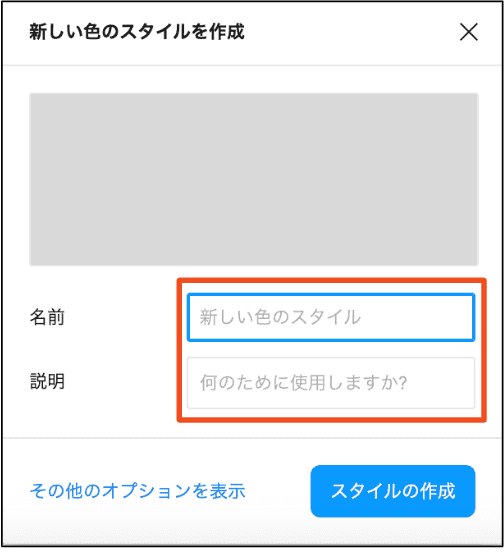

便利機能紹介☆
Flameの選択
フレームの機能の一つに描画範囲の役割があります。デザインを作成する際に、基準となる描画範囲を最初に設定します。
フレームを選択し、デザインパネルを開くことでiPhone・タブレッド・デスクトップ・ノートパソコン等の画面サイズを選択することが可能です。
最初に描画範囲を決める際にぜひ使用してみてください。
●選択したフレームのサイズを変更する場合は、デザインパネルの「フレーム」ボタンから変更することが可能です。
⬇︎
Fontのインストール
Figmaでは、Google Fontのいくつかの書体を予め利用することができます。
デザインを作成する上で、使用したいフォントがFigmaに入っていない場合、インターネット等で、
無料で配布されているFontをインストールして使用することが可能です。
アップルの書体の場合→英数字の箇所は「SFプロ」という書体を使用しています。
アップルのような書体で作成したい場合は下記からインストールしてみてください。
ポイント！
書体はNot Sans JPまたはHiragino Sansを使用されることが多いと思います。（Hiragino SansはMac OSにデフォルトで搭載されているようです）
Not Sans JPもFigmaに搭載されているようですが、文字の太さ（ウェイト）の種類が初期状態では少ないかもしれません。
可能であれば、Google Fontからインストールしておきましょう。
Not Sans JP
例：Not Sans JPのウエイト
文字の太さ（ウェイト）が例の画像くらい種類があるとデザインが行いやすいのではないかと思います！
⬇︎
カラースタイル・テキストスタイルの登録
デザインを作成していくと多くのカラーやテキストを使用します。
同じカラーやテキストスタイルを使いまわしたいなと思った時に登録しておくと便利です。
例：カラースタイル
例：テキストスタイル
方法
●前提：カラーパネルからカラー設定したオブジェクトを、マウス選択しておきます。
①デザインパネルの「塗り」＞丸4つのメニューらしきアイコンをクリック
②「色スタイル」モーダルの➕ボタンをクリック
③「新しい色のスタイルを作成」モーダルにカラー名（必要であれば説明も）を入力
④スタイルの作成ボタンをクリックするとカラーが登録される
※テキストスタイルを登録する場合は、デザインパネル＞「テキスト」から進んでください
→
→
→
ポイント！
- ・使用する際は、「塗り」または「テキスト」ボタンをクリックすると、登録したカラー・テキストスタイルが表示されます
- ・各スタイルが表示された際に、対象のスタイルの上で右クリックすると削除や編集が可能です
- ・名前に「/（スラッシュ）」を入れることで、グループにまとめることが可能です
⬇︎
メインコンポーネントへの移動
コンポーネントをたくさん作成し、作業を進めていると「メインコンポーネント」がどこにあるか分からなくなることがあります。
例えばサイドバナーであったりボタンであったり・・複数のページで使用するオブジェクトはコンポーネント化して使用することが多いため、1発でメインコンポーネントに移動してくれる方法を紹介します。
①コンポーネントを作成します。「コンポーネント」というフレームに「次へ」ボタンを作成しました。
⬇︎
②作成したコンポーネントを派生（コピペ）して、フレーム2にインスタンスを作成しました。
※分かりやすいように色を変更しています
⬇︎
③派生したインスタンスを選択し、デザインパネル＞「次へ」の横＞コンポーネントのアイコンマークをクリックします。
※「メインコンポーネントへ移動」というナビが出ます。
⬇︎
④最初に作成した、メインコンポーネントへ移動してくれます。コンポーネントが行方不明になった時に使用してみてください！
オートレイアウトとコンストレイン（制約）
●オートレイアウト
オートレイアウトは最初は難しいと感じるかもしれませんが、覚えてしまえばとても便利な機能です。
オブジェクトのサイズ調整、位置の固定、位置の入れ替え等々を自動で行ってくれるため、オブジェクトを追加した際に指定した通りに配置してくれます。
効率アップに繋がる機能なため是非チェックしてみてください。
●コンストレイン（制約）
コンストレイン（制約）は画面のサイズを変更した際にオブジェクトやテキストの位置を固定してくれる機能です。
例えば画面下部に設置した登録や保存ボタンであったり、フッターであったり、一覧レコードの編集ボタンであったり・・
便利な機能なため、オートレイアウトと合わせてご覧ください。
※こちらは動画の方が分かりやすいため、動画でのチェックをおすすめします。
⬇︎
＼もっと詳しく／
カラースタイル・テキストスタイルをもっと詳しく知りたい！という方はUdemyの動画を視聴してください。
下記講座で詳しく説明してくれます☆